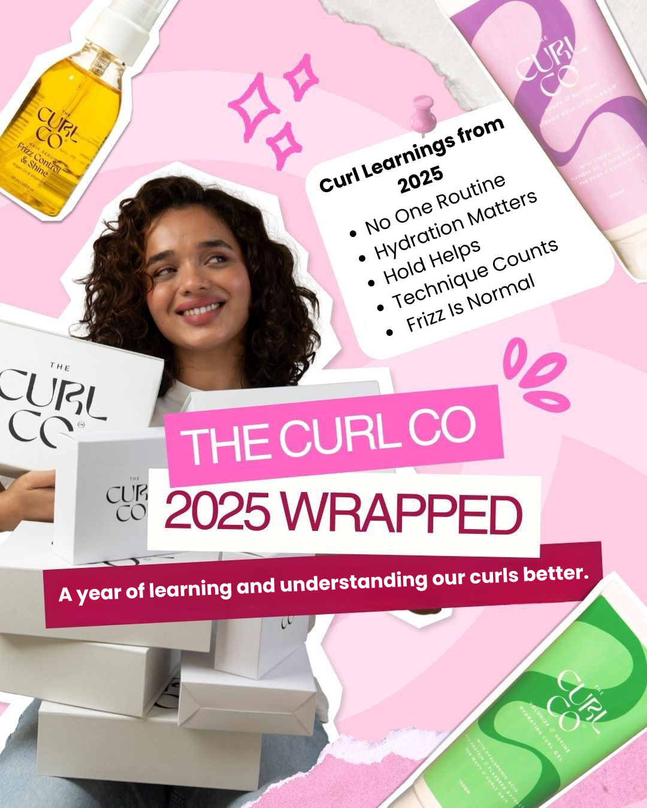

The CG method, simplified for India.
Updated · By The Curl Co Team

The Curly Girl Method changed the global curl conversation — but its original playbook was written for soft Western water, low humidity and finer texture. In India? We need a few tweaks.
1. Skip the harsh sulphates
The classic CG rule still holds: ditch sulphates. They strip moisture and rough up the cuticle, which leads to frizz. Use a gentle, sulphate-free shampoo (like our Curl Cleanse) once or twice a week.
2. Condition heavily — and detangle
Indian curls love conditioner. Apply mid-lengths to ends, finger-detangle, and leave a small amount in for fine to medium hair.
3. Style on soaking-wet hair
Cream goes on dripping-wet hair, then gel. Scrunch upwards in fistfuls. Don't touch until 80% dry — the cast will scrunch out into the softest curls.
4. Plop and pineapple
Wrap in a microfiber towel for 15 minutes (the Curl Co microfiber towel is a game-changer). At night, pineapple into a satin scrunchie and sleep on satin.
5. Refresh, don't restart
Day 2/3? Mist with water + a drop of leave-in, scrunch, finish with serum. You don't have to re-wash every day.
The Indian curveballs
- Hard water: Use a clarifying wash once a month to remove mineral buildup.
- Monsoon humidity: Layer a humidity-resistant gel on top of cream for extra hold.
- Oiling traditions: Pre-poo oiling (an hour before wash day) works beautifully if rinsed thoroughly.
The TL;DR? Be consistent. Hydrate. Touch less. Scrunch more. Your curls will reward you.
Start your CG journey
Our routine bundles take the guesswork out — wash, condition, style, finish.
View bundles